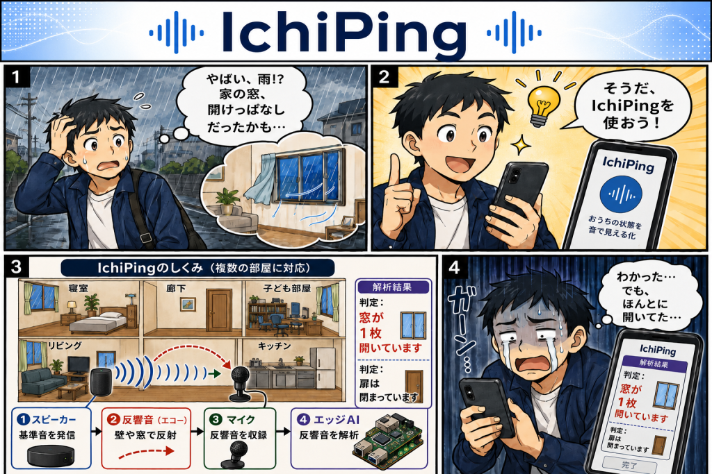
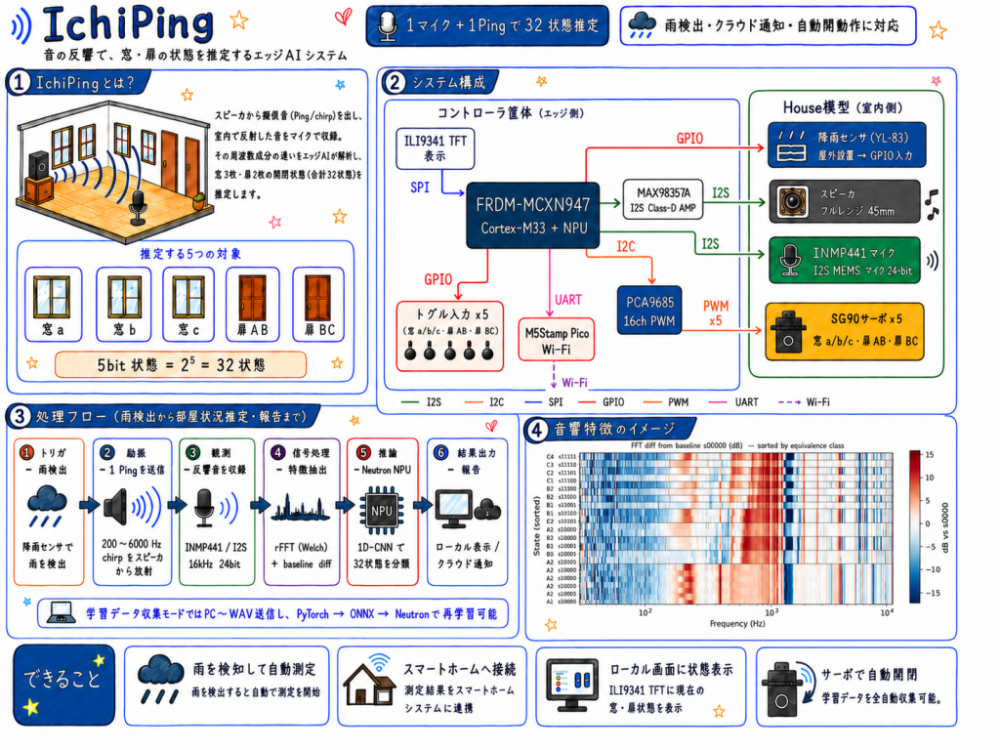
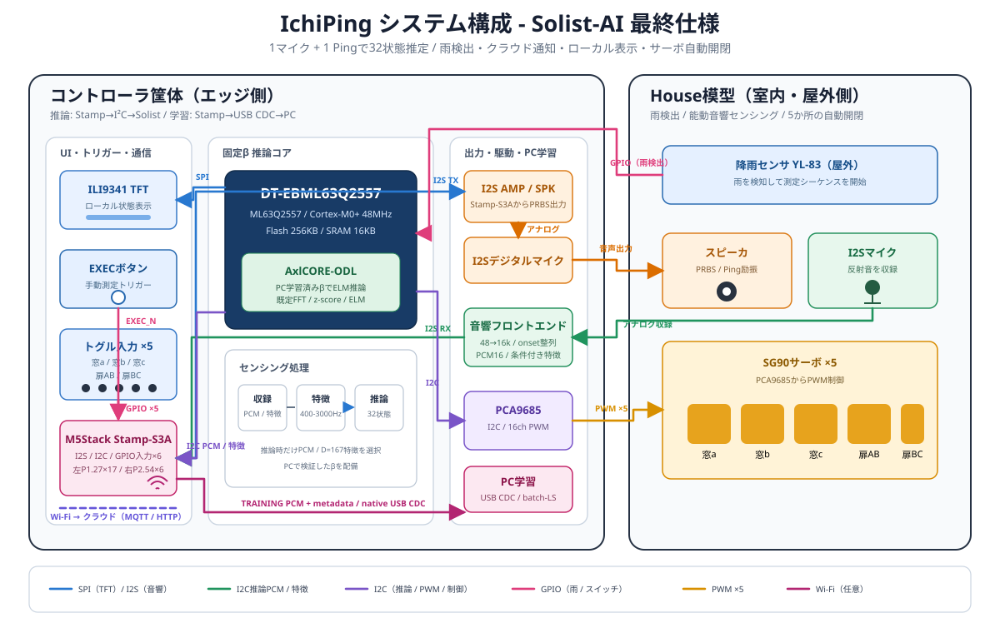
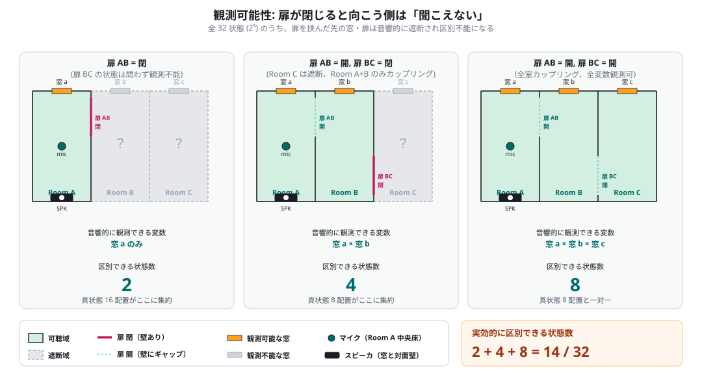

IchiPing → Solist-AI 移植 検証レポート
外出先で空が暗くなり雨——「窓、閉めてきたっけ？」。戻る時間はない。IchiPing は 1 個のマイクで家中の窓・扉の状態を一発で確認し、スマホへ通知する。これがこのプロジェクトの出発点となるユースケース。


IchiPing とは（移植元）
IchiPing は「1 個のマイクと 1 発の Ping（探査音）だけで、家中の窓・扉の開閉状態をまとめて推定する」エッジAIデバイス。部屋の反響は窓や扉の開閉で変化するため、既知の音を出して反響を分析すれば、複数の開口部の状態を 1 回の観測で同時に当てられる、という発想。
窓 3・扉 2 の計 5 箇所、それぞれ開/閉 → 組合せは 2⁵ = 32 状態。これを 1 マイク＋1 スピーカで識別する。「cls（class＝クラス）」は識別する状態の種類数で、32cls＝32 状態すべて、14cls＝後述の観測等価でまとめた 14 種を指す。

IchiPing が実現している技術
- 能動音響センシング：スピーカから PRBS（Pseudo-Random Binary Sequence＝擬似ランダム2値系列。M系列とも呼ぶ、白色雑音に近い「既知の探査信号」）を再生し、部屋の音響応答（RIR＝Room Impulse Response、室内インパルス応答）をマイクで収録する。
- baseline 差分特徴：全閉状態の応答（＝baseline、基準波形）を差し引いてから FFT（Fast Fourier Transform＝高速フーリエ変換。信号を周波数成分に分解する処理）。室内の共通応答が相殺され、開閉による差分だけが際立つ。
- 1D-CNN による分類：1D-CNN（1次元の畳み込みニューラルネットワーク）でスペクトルから状態を分類。
- 観測限界の理解（32→14）：扉が閉じるとその先の部屋は音響的に「聞こえない」。よって 32 真状態のうち一部は原理的に区別できず、14 個の観測等価クラスに集約される（下図）。これは IchiPing の精度上限を決める物理的な根拠。

Solist-AI への移植
移植先の Solist-AI（ML63Q2557） は オンデバイス学習IC＝クラウドや再プログラムなしに機器の現場で学習・再学習できるエッジ AI チップ。IchiPing は設置環境が変わると精度が落ちる課題（実機ライブ環境で 32cls 約 59%）があったが、Solist-AI なら設置したその場で校正して精度を取り戻せるのが利点。
ただしアルゴリズムは、IchiPing の深い 1D-CNN から Solist-AI の浅い ELM（Extreme Learning Machine。入力→中間層の重みは乱数で固定し、出力側の重みだけを学習する軽量な学習機。詳細は §2）へ置き換わる。本レポートはこの移植が成立するかの検証結果である。
（校正不要・投票100%）
（現地校正後・投票100%）
（実機16KB に収まる）
結論：14cls・32cls とも公式 Solist-AI シミュレータ（SLV1.00.04）で目標精度を実証。14cls は工場出荷の重みを焼くだけ（校正不要）で 99.4%、32cls は設置環境での少量校正で 99.1%。いずれも実機メモリ枠（SRAM 16KB / Flash 256KB）に収まり、IchiPing のライブ精度（59%）を両粒度で大きく上回る。
モデル構造（IchiPing CNN → Solist-AI ELM）
移植元の IchiPing は深い 1D-CNN（全層を学習）、移植先の Solist-AI は浅い ELM（β のみ学習）。アーキテクチャが根本的に変わるため、まず両者の構造を並べて示し、何がどう置き換わったかを説明する。
移植元：IchiPing 1D-CNN（XL, 32cls ≈ 173,000 params）
生の対数振幅スペクトル 1×1024 を入力し、Conv1D を 3 段重ねて特徴を学習で抽出、Flatten して全結合で 32 クラス softmax。重みは全層を誤差逆伝播で学習する。
移植先：Solist-AI ELM
Solist-AI のアルゴリズムは ELM（Extreme Learning Machine）＝隠れ層1層の3層FFNN。最大の特徴は、入力→隠れ層の重み α を学習せず seed 乱数で固定し、隠れ層→出力の重み β だけを学習する点。学習・保存パラメータが激減し、現場でのオンデバイス学習が軽量に行える。
ODL_GenerateRandomNumber により再生成＝保存不要）、β のみ学習。何が変わったか（CNN → ELM）
| 観点 | IchiPing 1D-CNN（移植元） | Solist-AI ELM（移植先） |
|---|---|---|
| 特徴抽出 | Conv 3層で学習して獲得 | α は乱数固定（学習不可）＋ 前処理で代替 |
| 学習する重み | 全層 ≈ 173,000 | β のみ ≈ 2,048 |
| 総パラメータ | ≈ 173,000 | ≈ 12,700（α 10,688 は保存0） |
| 入力 | 生 1×1024 log|FFT| | baseline差分FFTを 167bin にクロップ |
| 非線形性 | ReLU×3 + BatchNorm（深い） | hard_sigmoid×1（浅い） |
| 学習方法 | 誤差逆伝播（GPU/クラウド） | 最小二乗（オンデバイス可） |
| 環境適応 | 学習データで吸収 | 現地 β 校正で吸収（32cls） |
移植の核心： CNN の Conv 層は実質「スペクトル特徴の抽出器」を学習で獲得していた。Solist-AI は α を学習できない制約があるため、その役割を ①前処理（baseline 差分＋情報帯域クロップ＋標準化） と ②現地 β 校正 に肩代わりさせた。結果、学習パラメータを 173k → 2k（約 1/84） に圧縮しつつ、14cls・32cls とも同等以上の精度に到達。「深い特徴学習」を「賢い前処理＋ランダム特徴＋現場校正」で代替したのが移植の要点。
順伝播の式
h = hard_sigmoid( (s · x) · α ) hard_sigmoid(z) = max(0, min(1, 0.2z + 0.5))
y = h · β 予測クラス = argmax(y)
- α：(167 × 32)、一様乱数 U[−0.205, +0.205]（seed=1）。学習せず、チップ上で seed から都度再生成。
- β：(32 × C)（C=14 または 32）。PC で最小二乗学習し
ODL_SetWeightBeta相当で焼込。 - 入力スケール s = 0.5：実効 scaleAlpha を 0.1 相当に下げる調整。別環境への汎化が大幅改善（14cls で 86%→99%）。
- 演算は bfloat16、活性化は hard sigmoid（AxlCORE-ODL 準拠）。
14cls と 32cls の違い
| 項目 | 14cls モデル | 32cls モデル |
|---|---|---|
| 出力数 C | 14（観測等価クラス） | 32（生の5bit状態） |
| β 形状 | 32 × 14 | 32 × 32 |
| 運用 | 校正不要（工場βのみ） | 設置環境で校正（少量追加学習） |
| 意味 | 扉閉で内側不可視等の観測等価をまとめた、環境に頑健な分類 | 全状態を区別。環境固有の微差を使うため現地校正が前提 |
| α・隠れ層 | 共通（seed=1, m=32, D=167）— β のみ差し替え | |
特徴抽出パイプライン
入力ベクトルは「励振音と baseline（全閉状態）の差分スペクトル」。PRBS は毎回同一系列がサンプル整列再生されるため、時間領域で baseline を引くと室内の共通応答が相殺され、扉/窓による差分だけが残る。
なぜ baseline 差分か
同一 PRBS 系列がサンプル整列して再生されるため、全閉時の波形を基準に時間領域で引くと、部屋・スピーカ・マイクに由来する共通応答が高い一致度で相殺される。残るのは扉/窓の開閉で変わる成分だけ。これにより小さな状態差が際立ち、浅い ELM でも分離できる。
学習パイプライン（PC 自作）
学習データの内訳
| 要素 | 内容 | 倍率／数 |
|---|---|---|
| 元キャプチャ | IchiPing PRBS 励振 v6–v11（学習）／ v12（テスト）。各 run = 32状態 × 50フレーム | 6 run = 9,600 frame |
| クロスベースライン | 差分の基準波形を 3 種（v6 / v9 / v11 の全閉 s00000）に振り、baseline 揺らぎに頑健化 | ×3 |
| オーグメンテーション | 特徴空間で ① ガウス雑音 σ=0.5dB ② 全帯域レベルジッタ σ=1.0dB（原本＋拡張2種） | ×3 |
| 学習フレーム合計 | 上記の積（標準化あり） | 86,400 frame |
| テストフレーム | v12（14cls factory 用 1,600 ／ 32cls 校正後 holdout 1,280） | 1,280–1,600 |
| 現地校正（32cls） | 設置環境で各状態を少量採取して β を再計算 | 10 frame / 状態 |
シミュレーション結果（公式 Solist-AI Sim SLV1.00.04）
PC で算出した β をモデルにロードし、公式シミュレータで「推論のみ（Test only）」を実行。フレーム単体精度と、状態ごとに全フレームを多数決した投票精度を測定。
| モデル | 運用条件 | フレーム精度 | 投票精度 | テスト数 |
|---|---|---|---|---|
| 14cls factory | 校正なし（v6–11学習→v12初見） | 99.38%（1590/1600） | 100%（14/14） | 1,600 |
| 32cls on-device | 現地10frame/状態で校正後 | 99.06%（1268/1280） | 100%（32/32） | 1,280 |
| 32cls factory | 校正前（出荷直後の参考値） | 77.8% | 81.2% | 1,600 |
14cls — 校正不要で完成
入力スケール調整で別セッション汎化が成立し、工場 β を焼くだけで 99.4% / 投票100%。観測等価クラスは環境変化に頑健で、校正工程が不要。
32cls — 現地校正で完成
32 状態は環境固有の微差で区別するため、出荷時 77.8% → 現地で各状態を約10フレーム校正すると 99.1% / 投票100%。校正済み環境では観測等価とされた状態も 99.6% 区別できた。
実機実装仕様（ML63Q2557）
| 項目 | 仕様 / 設計値 |
|---|---|
| MCU | ML63Q2557（Cortex-M0+ 48MHz、FPU 無）+ AI アクセラレータ AxlCORE-ODL |
| メモリ | Flash 256KB ／ SRAM 16KB |
| モデル | 入力 D=167 ／ 隠れ m=32 ／ 出力 14 または 32 ／ hard sigmoid ／ bfloat16 |
| AI RAM 使用量 | 約 11KB（16KB 内）。オンデバイス学習時の共分散 P(32×32) も収まる |
| 推論時間 | 約 3.4ms / フレーム（Sim 実測値） |
| 保存パラメータ | α は seed 再生成で 保存 0。β のみ（14cls=32×14、32cls=32×32、bf16 で数KB）→ Flash 余裕 |
| 前処理 | on-chip FFT（≤1024/回）、Hann 窓、baseline 差分、z-score。baseline 波形は別途 Flash 保持 |
| 重み更新 | β のみ（α 固定）。実機 ODL での追加学習、または β を 32×32 連立で自前計算のいずれも可 |
パラメータ規模（IchiPing CNN 比）
IchiPing v1 CNN（32cls）≈ 173,000 パラメータ（全学習）。本 ELM（D=167, m=32）= 総 ≈ 12,700（α 10,688 は乱数固定で保存0 ＋ β 2,048）。学習・保存対象は β のみ＝ IchiPing 比で学習パラメータ約 1/84。これが軽量なオンデバイス学習を可能にする。
実機ハードウェア構成（DT-EBML63Q2557）
スピーカ／マイクの代替方法 検討結果
評価ボード DT-EBML63Q2557 はセンサ入力主体で、I2S・DAC・音声出力を持たない。励振音（PRBS）のスピーカ駆動と収録マイク接続を以下で解決する。
🎤 マイク（収録）
解決済：CN6 のアナログ入力を使用し内蔵 12bit ADC で収録。外部マイクアンプ → CN6 → ADC。I2S 不要。
🔊 スピーカ（励振）
DAC/I2S が無いため外付けで生成：
- 本命：外付け SPI DAC。SPI → SPI DAC → アンプ → スピーカ。PRBS を SPI で流す。
- 最終手段：I2S を持つ別MCUを UART 接続し I2S DAC を駆動。構成増のため極力回避。
実機での進め方
- 実機構成でデータ再取得：変更後のスピーカ／マイクで v6–v12 相当を収録。本書のクロスベースライン×3・オーグメンテーション×3 をそのまま適用。
- β を PC で再学習（batch-LS、α は seed 固定）→ 14cls / 32cls の β を生成。
- β 焼込 → 推論検証：14cls は校正なしで動作確認、32cls は現地校正（10frame/状態）。
- オンデバイス追加学習の実機確認：
ODL_StartTrainによる現地校正が収束するか実測。収束しない場合は 32×32 連立を自前 C で解くフォールバックに切替（精度は同等）。 - I/O ブリングアップ：CN6 マイク収録、SPI DAC 励振、PRBS と収録の同期。